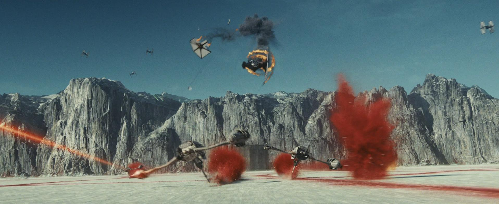
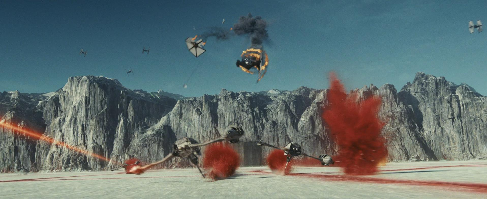

Historia
El esfuerzo por crear la proyección fue demasiado para Luke, y se desploma por el agotamiento. Con lo último de su fuerza, sube al acantilado donde entrenó a Rey y mira hacia el atardecer binario de Ahch-To, similar al que vio en Tatooine treinta y cuatro años antes, antes de convertirse en Jedi. Luke luego muere, y su cuerpo desaparece cuando se convierte en uno con la Fuerza. En Crait, Leia y Rey sienten la muerte de Luke. La Primera Orden asalta la base, pero es demasiado tarde para evitar que los luchadores de la Resistencia restantes escapen a bordo del Halcón, aunque no antes de que Ren comparta otro momento de vínculo de la Fuerza con Rey, quien finalmente lo rechaza, para su consternación. Después de dejar Crait, Chewbacca abraza a Leia. Finn abre un cajón en el Halcón con el fin de obtener una manta para la gravemente herida Rose, revelando brevemente que Rey guardó todos los libros de la biblioteca Jedi original y Yoda no los destruyó después de todo. Tras ser presentada formalmente a Poe, Rey lamenta la muerte de Luke mientras mira irremediablemente su sable de luz roto y a los números del pequeño grupo. Sin embargo, Leia señala que Luke ahora está en paz y que la Rebelión tiene todo lo que necesita para levantarse nuevamente. Más tarde, en Canto Bight, los niños del establo se entretienen con una historia sobre las aventuras de Luke cuando son interrumpidos por Bargwill Tomder, quien furiosamente ordena a los niños que vuelvan al trabajo. Afuera, Temiri Blagg, que todavía usa el anillo de la Resistencia que Rose le dio, convoca su escoba con la Fuerza y, con suerte, mira hacia las estrellas.


 
